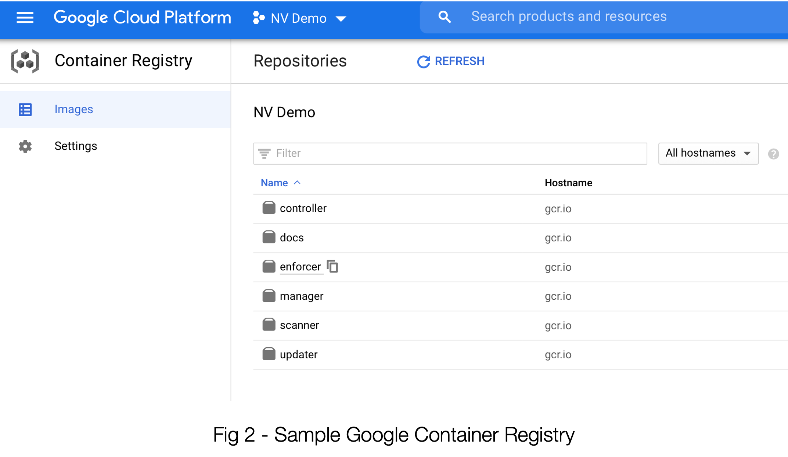
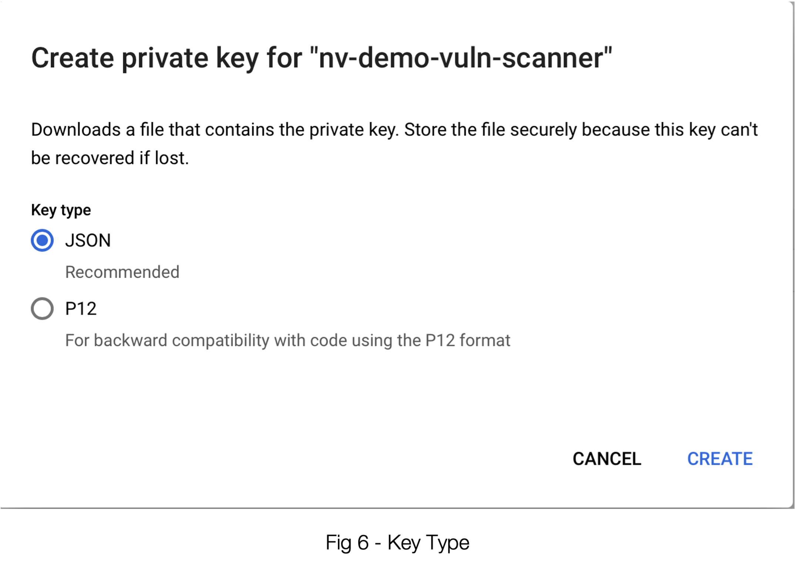

Analyse GCR utilisant des comptes de service
Google GCR - Authentification/Analyse avec des comptes de service GCP
Il est recommandé de ne pas dépendre des comptes attribués aux utilisateurs pour les intégrations. GCP prend en charge l’utilisation d’un compte de service pour accéder à GCR. Voici les étapes pour activer un compte de service pour GCR et l’utiliser pour déclencher des analyses de dépôt depuis SUSE® Security.
Commencez dans SUSE® Security, où l’on configure d’abord un nouveau registre :

En sélectionnant Google Container Registry comme type de dépôt, ce panneau est personnalisé pour accepter les informations nécessaires à l’utilisation de votre GCR.
-
Nom - C’est ici que vous donnez à cette entrée de dépôt un nom de votre choix. C’est simplement pour l’identifier dans l’interface SUSE® Security plus tard.
-
Registre - C’est le premier endroit où vous voudrez vous assurer que les bonnes données sont collectées depuis votre instance GCR. Bien que l’exemple de https://gcr.io soit le plus courant, nous voulons nous assurer qu’il reflète fidèlement la façon dont votre GCR a été configuré dans GCP. Cela pourrait être https://us.gcr.io par exemple. Nous allons le vérifier dans la section suivante.
-
Clé JSON - Comme il est assez évident, ce sera une clé au format JSON. Et, comme vous le voyez probablement, nous allons la trouver via GCP.
-
Filtre - Soyez conscient que vous devrez probablement remplacer tous les filtres ici par le nom réel du dépôt. Encore une fois, cela se trouve dans l’interface GCR.

Maintenant, dirigeons-nous vers cet écran GCR dans GCP. Une grande partie de ce dont nous avons besoin se trouve ici, sur cette page.
-
Voyez le “gcr.io” sous Nom d’hôte ? C’est ce qui doit figurer dans l’élément n°2, Registre dans l’interface SUSE® Security. (N’oubliez pas la partie \https://)
-
L’ID du dépôt se trouve en réalité sous le projet de niveau supérieur. C’est ce que vous utiliserez dans n°3, Filtre. Voir l’exemple de env-demo ci-dessous.

La clé JSON nous amène à explorer une autre étape très importante, et cela nous conduit à la section IAM & Admin de GCP où nous allons créer (ou confirmer le paramétrage d') un compte de service. Voir ci-dessous :

Une fois que vous avez saisi les données pour la première étape de création d’un compte de service, vous devez appuyer sur le bouton “CREATE” pour que l’étape 2 soit prête à accepter des entrées.

Assurez-vous de sélectionner Basic -→ Visionneur pour l’accès. Si vous avez un compte de service existant, assurez-vous que l’accès est configuré de cette manière. (Conseil : Même les autorisations d’accès qui semblent plus puissantes ne semblent pas permettre un accès approprié. Ne sautez pas cette étape.
Une fois que vous avez effectué cette étape, vous pouvez passer facilement à l’étape 3 et procéder à la création du compte de service.
Si vous n’atterrissez pas immédiatement sur le panneau d’informations pour votre nouveau compte de service, assurez-vous d’y aller dans la liste des comptes de service. Voir la figure 5 ci-dessous.

Cliquez sur “ADD KEY” -→ “Create New Key”

Comme vous l’avez déjà conclu, JSON est la solution ici. Sélectionner “CREATE” entraînera un fichier que vous pourrez télécharger dans votre navigateur. Le contenu de ce fichier doit être collé dans le champ Clé JSON 3 dans SUSE® Security ; voir la figure 1.
Avant de vous exciter trop, il y a une dernière chose à vérifier. Pour que le scanner dans SUSE® Security utilise l’API pour scanner et protéger vos images, cette API doit être activée dans votre compte GCP. Vous pouvez l’activer soit via la ligne de commande via
gcloud services enable artifactregistry.googleapis.comOu vous pouvez utiliser l’interface graphique GCP. Rendez-vous à “API Library” et recherchez “Artifact Registry API” et assurez-vous qu’il est activé pour votre projet. Voir la figure 7.

Vous devriez être prêt ! Voir la figure 8 ci-dessous pour un dépôt correctement configuré utilisant les données de notre exemple :

Obtenez le jeton d’accès en utilisant l’API REST
L’API REST SUSE® Security peut être utilisée pour s’authentifier en utilisant le compte de service. L’exemple ci-dessous utilise gcloud pour obtenir le jeton d’accès. Le nom d’utilisateur est “oauth2accesstoken”.
gcloud auth print-access-token
ya29.a0AfH6SMAvyZ2zkD3MZD_K8Lqr7qkIsRkGNqhAGthJ_A7lp8OGRe7xh5KmuQY-VJfqu83C9e1gi7A_m1InNm8QIoTGf9WHXnOeAr1gT_O6b6K667NUz1_YDunjdW09jt0XvcBGQaxjJ3c4aHlxdehBFiE_9PMk13JDt_T6f0_6vzS7Utilisez le jeton avec l’analyse du dépôt SUSE® Security
Le script d’exemple ci-dessous intègre le jeton d’accès pour déclencher le scan du dépôt GCR.
_curCase_=`echo $0 | awk -F"." '{print $(NF-1)}' | awk -F"/" '{print $NF}'`
_DESC_="able to scan ubuntu:16.04 image"
_ERRCODE_=0
_ERRTYPE_=1
_RESULT_="pass"
# please remember to specify the controller ip address here
_controllerIP_="10.1.24.252"
_controllerRESTAPIPort_="10443"
_neuvectorUsername_="admin"
_neuvectorPassword_="admin"
_registryURL_="https://us.gcr.io/"
# registry urls could also be gcr.io, eu.gcr.io, asia.gcr.io etc
_registryUsername_="oauth2accesstoken"
_registryPassword_=$(gcloud auth print-access-token)
_repository_="bionic-union-271100/alpine"
_tag_="latest"
curl -k -H "Content-Type: application/json" -d '{"password": {"username": "'$_neuvectorUsername_'", "password": "'$_neuvectorPassword_'"}}' "https://$_controllerIP_:$_controllerRESTAPIPort_/v1/auth" > /dev/null 2>&1 > token.json
_TOKEN_=`cat token.json | jq -r '.token.token'`
echo `date +%Y%m%d_%H%M%S` scanning an image ...
curl -k -H "Content-Type: application/json" -H "X-Auth-Token: $_TOKEN_" -d '{"request": {"registry": "'$_registryURL_'", "username": "'$_registryUsername_'", "password": "'$_registryPassword_'", "repository": "'$_repository_'", "tag": "'$_tag_'"}}' "https://$_controllerIP_:$_controllerRESTAPIPort_/v1/scan/repository" > /dev/null 2>&1 > scan_repository.json
while [ `wc -c < scan_repository.json` = "0" ]; do
echo `date +%Y%m%d_%H%M%S` scanning is still in progress ...
sleep 5
curl -k -H "Content-Type: application/json" -H "X-Auth-Token: $_TOKEN_" -d '{"request": {"registry": "'$_registryURL_'", "username": "'$_registryUsername_'", "password": "'$_registryPassword_'", "repository": "'$_repository_'", "tag": "'$_tag_'"}}' "https://$_controllerIP_:$_controllerRESTAPIPort_/v1/scan/repository" > /dev/null 2>&1 > scan_repository.json
done
echo `date +%Y%m%d_%H%M%S` log out
curl -k -X 'DELETE' -H "Content-Type: application/json" -H "X-Auth-Token: $_TOKEN_" "https://$_controllerIP_:$_controllerRESTAPIPort_/v1/auth" > /dev/null 2>&1
cat scan_repository.json | jq .
rm *.json
echo `date +%Y%m%d_%H%M%S` [$_curCase_] $_DESC_: $_RESULT_-$_ERRCODE_